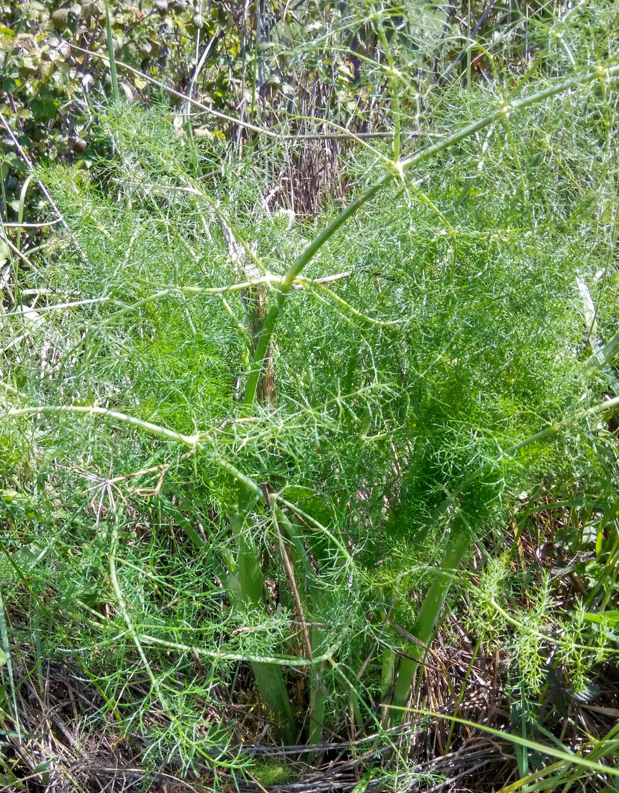

Ayuntamiento de Senés
JARDIN BOTANICO DE ESPECIES AUTOCTONAS DE SENES

Foeniculum vulgare

El hinojo (Foeniculum vulgare) es una planta herbácea perenne muy común en la región mediterránea, especialmente en terrenos abiertos, bordes de caminos y zonas alteradas. Se caracteriza por su aroma intenso y agradable, así como por su porte alto y elegante.
Puede alcanzar entre 1 y 2 metros de altura, con tallos erectos y muy ramificados. Sus hojas son finamente divididas, de aspecto plumoso, y sus flores se agrupan en umbrelas de color amarillo, muy visibles durante la época de floración.
El hinojo es originario de la cuenca mediterránea, donde crece de forma espontánea en terrenos abiertos, laderas, cunetas y bordes de caminos. Se adapta bien a suelos pobres y secos, aunque prefiere zonas con cierta disponibilidad de nutrientes.
En la Sierra de los Filabres y su entorno, es frecuente encontrarlo en zonas alteradas por la actividad humana, formando parte de la vegetación ruderal característica.
El hinojo es ampliamente conocido por sus propiedades digestivas, carminativas y expectorantes. Se ha utilizado tradicionalmente para aliviar problemas digestivos, gases y molestias estomacales.
Sus semillas contienen aceites esenciales con propiedades beneficiosas, siendo utilizadas en infusiones, medicina natural y también en gastronomía.
El hinojo ha sido símbolo de fortaleza y vitalidad desde la antigüedad. En algunas culturas mediterráneas se le atribuían propiedades protectoras y se utilizaba en rituales relacionados con la salud y el bienestar.
También representa la renovación y la resistencia, debido a su capacidad para crecer en terrenos difíciles.
En Senés, el hinojo ha sido utilizado tradicionalmente tanto en la cocina como en la medicina popular. En la cocina como condimento para las hoyas de trigo, tambien se utilizaban los tallos para aliñar las aceitunas y enserar los higos.
En medicina se utilizaba como diurético, digestivo estomacal, vulnerario y galactógeno. Para belleza, el fruto del hinojo tiene propiedades estimulantes y purificantes.
El hinojo florece principalmente durante el verano, produciendo umbrelas de flores amarillas muy características. Estas flores atraen a numerosos insectos polinizadores, contribuyendo a la biodiversidad del entorno.
El hinojo ha sido utilizado desde la antigüedad por diversas culturas, incluyendo la romana, tanto con fines medicinales como culinarios.
Su sabor anisado lo hace muy apreciado en la gastronomía, y sus semillas son utilizadas en la elaboración de diferentes productos, desde infusiones hasta licores tradicionales.